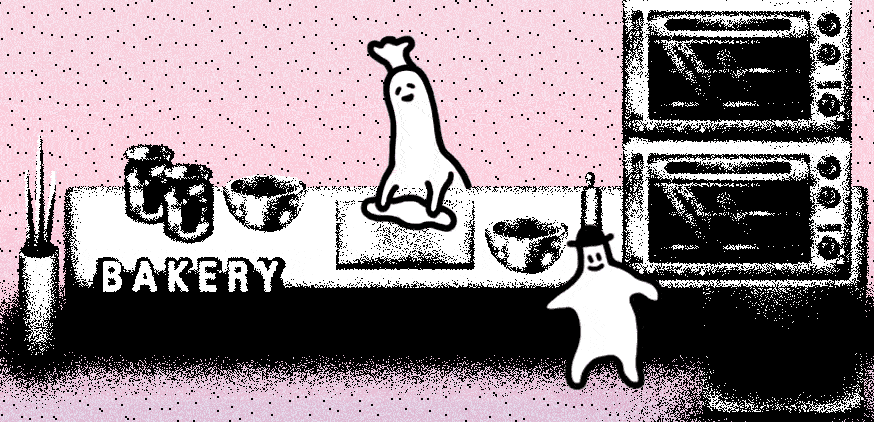

TOTT
こんにちは、『ホテル・ソウルズ』の開発者トートです。今日は『ホテル・ソウルズ』というゲームがどのように作られたか、開発しながら感じた点、苦労した点を簡潔に書いてみましょう。

『ホテル・ソウルズ』は、独特なビジュアルのミステリー・アドベンチャー・ゲームです。
人によっては微ホラーと感じることもある妙に不気味なゲームです。
このような『ホテル・ソウルズ』がどのように誕生したのかを思い返すと、開発者の好みから自然に生まれたゲームという気がします。
『ホテル・ソウルズ』を作る前の私の作品はこんな感じでした。 （詳細を見たい場合、画像をクリックしてください）


（ゲーム開発ツールの）Game Makerで『Roomies』という非常に短い部屋脱出ゲーム（？）を作って展示しました。キャラクターの形が『ホテル・ソウルズ』と非常に似た感じですよね？


このような好みとアートスタイルを持つ私が、いつも一緒に通学していた親友ヌンヌン（『ホテル・ソウルズ』のプログラミング担当）とゲームを作って『ホテル・ソウルズ』が誕生したのは、実際、とても自然な結果でしょう。
これらが基礎となって始まりましたが、最初は小さくて軽いトイ・プロジェクトだった『ホテル・ソウルズ』がSteamで発売されるゲームになったのは、やはりクラウドファンディングの力が大きかったです。
『ホテル・ソウルズ』はTumblbugのビデオゲーム分野で最も達成率（1433％）が高いゲームです（この文章を書いた2020年6月6日現在）。
集まった金額そのものの大きさではなく、私たちの最初の目標金額が非常に低いためでした。当初の目標金額が150万ウォンだったんです。（それでも失敗する可能性が高いと、その時は思っていました。）
しかし、幸いクラウドファンディングで多くの後援を受けて、ゲームの規模を広げてSteamで無事発売することになり、もうすぐNintendo Switch版のリリースも控えています。
なので、『ホテル・ソウルズ』は本当に自然に発生して（？）雪玉のように規模が大きくなって開発されたゲームと言うことが出来ますね。
ゲーム開発で最も大変だったことを思い出してみると、ゲーム開発自体よりも、発売後の広報とマーケティングではないかと思います。Steamに発売するときは、パブリッシャーなしで私たちの力ですべてのパブリッシングをしたので、
小さなインディーズゲーム開発チームだけでグローバル市場に広報をするのは非常に難しいと感じました。
資源を投じて翻訳をして韓国語以外の言語をサポートしましたが、販売促進するための能力が足りなくて悲しかった。
マーケティングに多くの力を入れにくいタイプの開発者であれば、良いパブリッシャーと一緒に仕事をすることも、適切な方法だと思います。
『ホテル・ソウルズ』を開発して最も強く感じたのは、ほとんどの状況で、完璧主義は後回しにするのが良いということでした。
開発の過程で、心残りな点は確かに多いです。あれはこのように、これはあのようにしようと、目につく部分が今もたくさんあります。
しかし、その場合でも、勇気を出して、いったん前進する方が良いと思います。完成させることが最も重要です。悲しいことに、インディーゲーム開発者には、資本と時間の限界がありますから。
また、時間とコストの関係で放棄して引き返した部分が、後にプレイヤーにチャームポイントだと思われるという面白い経験もしました。
そして、あれこれ惜しい部分が多くても、プレイヤーの記憶に残る面白い要素が一つでもあるなら、いったん成功だと思います。面白くするのがインディーゲームですから！

p.s.先に述べたように、『ホテル・ソウルズ』は、もうすぐNintendo Switchでも発売されます（訳注：2020年7月30日に発売された）。
子供の頃から任天堂のゲームを愛して育ちましたが、Nintendo Switchの画面で『ホテル・ソウルズ』を見ることができるなんて、とんでもなくうれしいです。
『ホテル・ソウルズ』の開発を助けてくださった方々、出資してくださった方、楽しくプレイしてくださったすべての方に、いつも感謝しています。